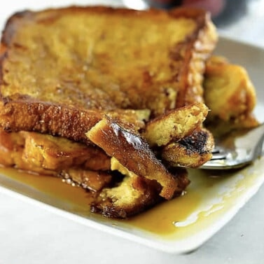

This classic French Toast recipe is so delicious, easy to make and perfect for breakfast or brunch!
Enjoy the BEST French toast in minutes with this recipe and helpful tips!

French Toast Ingredients and Substitutes
Bread – I love French toast made with challah bread, brioche, or thick slices of Sally Lunn
bread. But
I have a little secret. If you don’t have those on hand, it is absolutely delicious and easy with slices of our
favorite sandwich bread. Use whatever you have on hand!
Eggs – you will need large eggs for this recipe.
Milk – you can use your favorite milk or dairy-free milk alternative.
Salt – add a pinch of salt to balance the flavors and sweetness
Sweetener – you definitely have options for the sweetener to use based on your personal
preferences.
Flavorings – I love to include vanilla extract and ground cinnamon for a classic French toast
flavor.
You can
omit
the cinnamon, if you prefer, or add more for a more pronounced cinnamon French Toast. You can also add nutmeg if
you
like.
Butter – melted on the griddle for cooking and then add a tablespoon butter for serving, if
desired.
Maple syrup – real maple syrup is required in our family for the perfect French toast! You can
also use
a fruit
syrup like my blackberry syrup if you prefer.
How to Make Easy French Toast Recipe
Whisk To save on dishes and cleanup, I whisk together the eggs, milk, sweetener, vanilla extract,
and
ground cinnamon right into a shallow dish I’ll use to dip my bread in.
Dip Once I have whisked the egg mixture together well, I place my bread slice in on one side and
then
quickly flip it over to the other side since some sandwich bread will absorb the liquid super quickly. You’ll want
to be sure that you are dipping your bread and not leaving it for any time to soak so that the bread does not
absorb too much liquid. Make sure to follow this so your bread does not get too wet. This will prevent your French
toast from becoming soggy.
CookOnce both sides of the bread are coated with the liquid, I place them into the skillet with
melted
butter set over medium heat. They only take a few minutes to cook, about 2 to 3 minutes on each side.
Serve Serve immediately with your syrup of choice. I also love to serve with fruit like fresh
berries (I
love blackberries, blueberries, strawberries, and raspberries). A dollop of homemade whipped cream is always a
good idea!